|
|
|
Мамай-тропинг
(25-26 ноября 2006) Укатались с Лехой в прошлые выходные - всю неделю работать не хотелось :) А он еще говорил - снега мало, пухляка бы, чтоб подложку совсем не чувствовать! Вот к выходным два дня снег и шел. К Лехе приехал друг Артем из Новосиба, и они на машине, захватив Языка Вову едут из Иркутска. Вчера еще Макс звонил - поедут с Андереем и с другим народом в ночной заход. А я на утренней электричке, в компании слюдянцев (Артем Сушко, еще один Артем, и их подруги из Иркутска). Еще в первом вагоне ехал Саша Малюк (Улан-Удэ) - известный турист и горнолыжник, этим летом со товарищами построили еще одно зимовье - горнолыжный комплекс "Мамай" расширяется :) ! 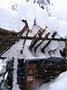 Время 2 часа. Троица офигенных тропильных танков (Макс, Андрей и я) начинали по старой тропе всего по колено. Старая тропа, проложенная кем-то по кулуару, петляла в кустах и очень хитро маскировалась под снегом. Из-за этого танки тропили уже по пояс, и на крутых местах и по шею. Главной тропильный инструмент - сноуборд, на вытянутых руках на уровне головы зарубаешь в снег, снег сгребашь под ноги, там утрамбовываешь, на него встаешь и опять зарубаешься, теперь можно подтянуться на доске чуть повыше. Далее процесс повторяется аналогично в течении несколько часов :) Время уже к вечеру, скоро будет темнеть. Внизу промаячили яркие лыжи Андрея Жукова и желтая куртка Саши Сахаровского, ангарчане догоняют! А вот и сам Нестер машет загипсованой рукой: "Ну вы и танки!". 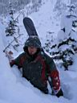 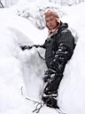 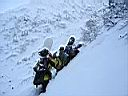 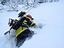 Поделившись с ангарчанами удовольствием потропить, немного отдохнули и вышли всей компанией к закустованному началу кулуара Узкий (Третий). К этому не простому кулуару прибавлял сложности очень глубокий и свежий пухляк. В итоге вся банда долго не могла найти баланс скорости в сумраке, кулуар был усеян закопаными вниз головой и вниз досками членами так называемого катания. Некоторые проваливались между камней в ручей, кое-кто упал с 4 метрового дропа. Долго "выкатывали". Леха и Вова провели новосибирцам экскурсию по местным
достопримечательностям, катанули на Учебке. Вова заценил свою новую
фрирайдную доску и даже поцарапал камень суперпрочным скользяком. 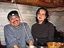 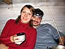 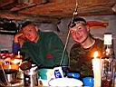 Выспались отлично, даже проспали утренний ритуал кипячения воды. Воду потом все равно вскипятили, пролили, еще раз вскипятили со снежком, налопались всякой всячины, запили чаем и пошли на гору. Из рядом стоящей палатки вылез только Артем Сушко и героически разводил костер. На градуснике -15С. Солнечко. По дороге заглянул в скорномное, но добротное зимовье Александра Малюка. Хозяина не было, опять пошел тропить на Лесной Пупырь. 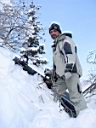 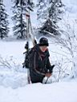 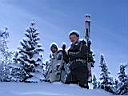 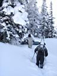 На горе все было затроплено до трех Берез и даже чуть повыше. Ну и мы еще повыше затропили, по гребню до начала козырьков. Неизвестная болезнь подкосила Вову в начале подъема и он был вынужден сойти с дистанции. Втроем (Леха, Артем и я) плюс невесть-откуда-взявшийся лыжник, попили чай из термоса погрызли вкусняшек, сфотались на память и покатили в широкий цирк, забытый пухлым и цеплючим снегом. Доски и лыжи тонут в снегу, запредельные скорости можно позабыть до весны. Леха катил практически по прямой, чтобы хоть как-то разогнаться. Мне большие скорости не нужны, ехал дугами, прыгнул с двух кочек, запнулся об две елки, застрял на плоскотине :) Вытропил повыше, мимо прокатил Артем. Дальше прорывались немного через лес, через кусты, выгребли на тропу и докатили до реки. 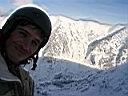 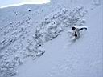 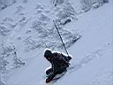 Народ местами уже собирает палатки, топает до электрички. А местами только возвращается с катания. А еще местами - только пошел кататься :) это наши соседи, спросив у Вовы разрешение на теплую ночевку в зимовье, пошли размяться. Ну да, они на три дня пришли, у них времени много :) 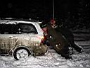 ( фото-дополнение здесь... ) Ноябрь 2006. Белокрылов А.Ю. Слюдянка. |